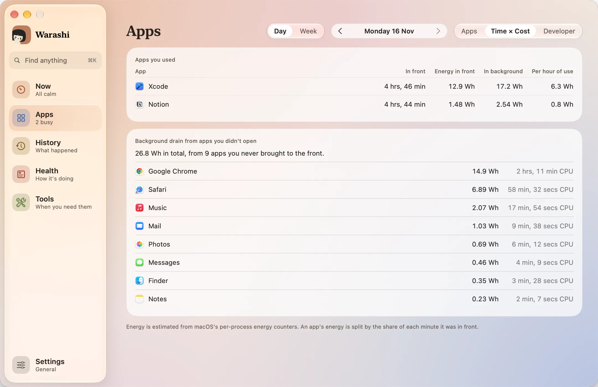
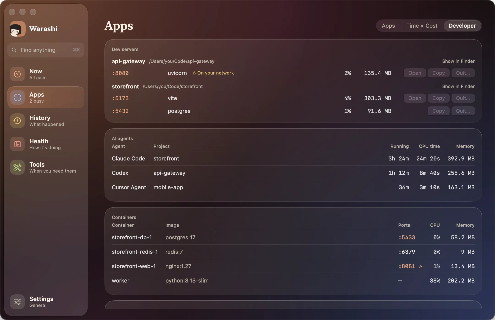

O espírito que cuida do seu Mac.
O Warashi observa o seu Mac, mantém a bateria jovem e o disco livre, avisa no instante em que algo está errado e lembra você de descansar. Um app discreto de barra de menus no lugar de seis.
Apple silicon · macOS 26 ou posterior · Beta gratuito · Sem conta


Cuidar · Bateria
Mantida em 80%.
Envelhece anos mais devagar que uma bateria que fica em 100%.
Limpar
7,2 GB seguros para limpar
Caches de appsNavegadoresLogsDesenvolvedor
Descansar · Pausas
0:15
Desvie o olhar da tela.
Verificação
Tudo certo.
Conhecer · Alertas
 Google Chrome9,8 GB
Google Chrome9,8 GB
A memória está acabando. Encerre o app, ou deixe como está.
Conhecer · Histórico
Por que estava lento às 14:02?
O Xcode estava usando a maior parte do processador.
Para desenvolvedores
$ warashi agents Claude Code working · 62% left Codex done · my-app
Conhecer
Ele conhece o seu Mac de cor.
Um espírito e um número na barra de menus, dois ao lado do entalhe e uma leitura a cada cinco segundos, guardada por um ano. Quando algo acontece, o Warashi já sabe o motivo.


Avisado uma vez
Um app fora de controle, memória acabando, calor, um disco enchendo.
Uma vez por problema, com as provas e uma coisa a fazer.
Diário de bordo · ontem
- A música manteve o seu Mac ativo por 55 min
- O seu Mac ficou lento por 6 min O Xcode estava usando a maior parte do processador.
- A memória do Google Chrome está crescendo rápido Cresceu 1,35 GB na última hora.
- Carregada até 100%, acima do seu limite de 80%


Cuidar
Ele mantém o seu Mac jovem.
Uma bateria mantida em 80% dura anos a mais. Uma Verificação semanal pega o problema antes que ele custe caro. E quando chega a hora de um novo Mac, o Warashi sabe exatamente do que você precisa.


$249
é o que uma bateria de MacBook Pro desgastada custa na Apple, fora da garantia. Uma bateria que fica em 100% e quente se desgasta mais rápido.


Consultor de Upgrade
Meu próximo Mac precisa de 32 GB?
Depois de 30 dias do seu uso real, o Warashi diz de quanta memória e armazenamento o seu próximo Mac precisa, e se um chip mais rápido ajudaria. Com provas, não um palpite na hora de comprar.
Limpar
Ele mantém o seu disco livre.
Veja o que está enchendo o disco, limpe de uma vez o que volta sozinho e remova apps com tudo o que deixaram para trás. Tudo vai para a Lixeira, então nada se perde por engano.
Limpar
Tudo o que poderia sair, conforme o cuidado necessário.
- Seguro para limparCaches de apps e navegadores, logs, dados de compilação do Xcode. Eles voltam sozinhos.7,2 GB
- Confira antesInstaladores antigos, segundas cópias de downloads, cópias de anexos do Mail.1,4 GB
- Com cuidadoBackups de iPhone e iPad, que podem ser a única cópia.38 GB


Desinstalador
Remova apps direito.
Cada app com o que deixou na sua Biblioteca, começando pelos que você não abre há meses. Mais as sobras de apps que você removeu anos atrás.
Nunca os seus arquivos
Só nomes, tamanhos e datas.
O Warashi nunca abre um documento. O Acesso Total ao Disco é opcional.
Lixeira
Esvaziada. 4,8 GB liberados.
Um aviso quando a Lixeira fica grande, e o número real quando você a esvazia.
Descansar
E cuida de você.
Pausas suaves para os olhos e as costas, uma tela mais calma quando você precisa de foco e um Mac que fica ativo exatamente pelo tempo que o trabalho pede.


Manter ativo
Por uma hora, até o trabalho acabar, ou com a tampa fechada.
Para um download, uma compilação ou uma apresentação.
Os pequenos detalhes
- Velocidade da internet e do disco
- Qualidade do Wi‑Fi
- Uma tela preta para limpar
- Ocultar ícones da mesa
- Silenciar o microfone
- Ejetar todos


Para desenvolvedores
O que há naquela porta? Quanto aquele agente está custando?
Claude Code, Codex e Cursor: o que cada um está fazendo, quanto resta do seu limite e um aviso no entalhe quando um precisa de você. Servidores de desenvolvimento por projeto, Docker, modelos de IA locais na memória e os gigabytes que suas ferramentas deixam para trás.


O comando warashi
$ warashi explain 14:30 Memory ran short Swap rose from 1.2 GB to 8.6 GB. $ warashi apps --hours 3 Xcode CPU 37m 35s 9.4 GB Safari CPU 26m 22s 6.1 GB
E uma conexão MCP opcional, somente leitura, para que o Claude, o Cursor e outros apps de IA respondam com base no histórico do seu Mac. Nada é compartilhado se você não adicionar.
Um app discreto, onde antes havia uma gaveta cheia deles.
O Warashi pegou a única coisa que cada um destes faz bem e juntou tudo em um lugar que também lembra. Nada contra eles: são bons no que fazem.
| O que você leva | Warashi | CleanMyMac | iStat Menus 7 | AlDente Pro | Amphetamine | coconutBattery |
|---|---|---|---|---|---|---|
| Leituras ao vivo na barra de menus | ✓ | ~um menu | ✓ | – | – | – |
| Um ano de histórico, com qualquer momento explicado | ✓ | – | ~histórico, sem explicações | – | – | – |
| Limite de carga, carga completa, um agendamento | ✓ | – | – | ✓ | – | – |
| A saúde da bateria ao longo dos meses | ✓ | – | – | ~ | – | ✓ |
| Manter ativo, até com a tampa fechada | ✓ | – | – | – | ✓ | – |
| Desinstalador, restos, arquivos grandes, Downloads | ✓ | ✓ | – | – | – | – |
| Verificação de segurança e backup | ✓ | ~busca de malware | – | – | – | – |
| Pausas e lembretes de postura | ✓ | – | – | – | – | – |
| Fluxo de Energia e quanto cada app custa | ✓ | – | ~leituras | – | – | – |
| Preço | Beta gratuitocompra única na 1.0 | $39.95por ano | $11.99uma vez | €11.49por ano, ou €23.99 uma vez | Grátis | €9.95uma vez, pelo Plus |
≈ $75por ano, no primeiro ano
Quanto os cinco custam juntos, para um Mac. E cinco itens na barra de menus, cinco atualizadores, cinco conjuntos de ajustes.
$0enquanto o Warashi está em beta
O Warashi 1.0 será uma compra única. Sem assinatura, nunca. Seu histórico e seus ajustes são mantidos.
Preços do site de cada fabricante em novembro de 2026, para um Mac; variam por região e promoção. Recursos conforme listados por cada app; “~” significa em parte.
0.2%
de um núcleo em segundo plano. Nada enquanto as telas dormem.
60MB
de memória, em geral, com a janela fechada. Swift nativo, feito para Apple silicon.
0 contas
Baixe, abra, pronto. Seu histórico nunca sai do seu Mac.
Privado por princípio
- Sem conta, sem nuvem, sem telemetria sobre seus apps ou arquivos.
- Sem gravação de tela, sem teclas digitadas, sem conteúdo de arquivos, nunca.
- Apenas estatísticas de uso anônimas, informadas no tour de boas-vindas. O que exatamente é enviado
Veja em dois minutos.
Boas perguntas.
O que é um warashi?
No folclore japonês, um zashiki-warashi é um pequeno espírito da casa. Diz-se que o lar onde ele mora prospera. O nosso mora na sua barra de menus e cuida do seu Mac.
Em quais Macs ele funciona?
Macs com Apple silicon (M1 e posteriores) com macOS 26 ou mais recente.
É gratuito?
Grátis durante o beta. O Warashi 1.0 será uma compra única, sem assinatura. Seu histórico e seus ajustes continuam com você.
Posso continuar com o AlDente ou o CleanMyMac?
Pode, mas dois gerenciadores de carga vão brigar pelo limite, então fique com um só. O Warashi avisa quando vê outro em execução.
Ele deixa meu Mac lento?
Não. Cerca de 0,2% de um núcleo em segundo plano e 60 MB de memória, medidos e mostrados nos Ajustes.
Qual é a diferença em relação ao Monitor de Atividade?
O Monitor de Atividade mostra este segundo. O Warashi lembra o que aconteceu enquanto você não estava olhando, avisa quando importa e cuida da bateria, do disco e de você.

Feito por uma pessoa, com carinho.
Oi, sou o Adam, um desenvolvedor independente. O Warashi é um projeto meu: o app, o design dele e este site. Quero que ele seja o tipo de app para Mac que eu mesmo adoraria usar: calmo, honesto com seus números e leve no seu Mac. Se você tiver uma ideia, ou algo não estiver certo, me escreva.
Adam
Deixe um espírito tranquilo
cuidar do seu Mac.
Grátis enquanto o Warashi está em beta. Um download pequeno, sem conta, e a partir de hoje à noite o seu Mac tem alguém cuidando dele.